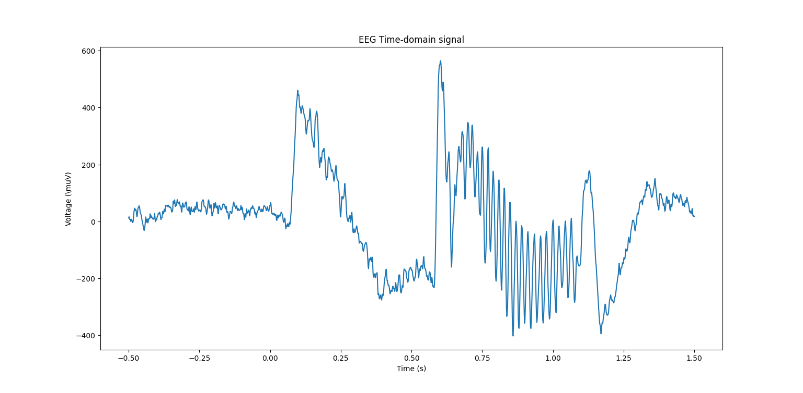

wavelet package
Submodules
wavelet.spectral_analysis_wit_morlet_wavelet module
- spectrogramm_with_morlet_wavelet()[source]
Spectogramm by doing a convolution between the raw signal and complex morlet wavelet:
- Method:
Create multiple complex morlet wavelet from different frequency. The frequency range of the morlet wavelets correspond to the frequency axis of the spectogramm.
- Example:
EEG raw signal
Create complex morlet wavelet
Example of one complex molet wavelet (one for the range of the frequency)
All the morlet wavelet shape/amplitude represented on a colormap
Convolutions
The most efficient way is to loop on the different complex morlet wavelet and multiply fft(raw_signal) with fft(complex_morlet_wavelet[i])
Plot Spectogramm
- Comparison Spectrogramm with Morlet Wavelet vs FFT:
scipy.signal.spectrogram(data, fs) (FFT-based Spectrogram):
Method: Utilizes the Fast Fourier Transform (FFT) to compute the frequency content of the signal.
Features: The spectrogram generated by this method has a fixed frequency resolution and a time resolution based on the size of the temporal window used.
Advantages: It is a fast and efficient method to obtain a time-frequency representation of the signal, suitable for relatively stationary signals.
Disadvantages: Less suitable for non-stationary signals or short-duration events.
Time-Frequency Analysis with Morlet Wavelet Transform:
Method: Uses a family of Morlet wavelets to compute the frequency contribution at different temporal moments.
Features: Offers variable time and frequency resolution, which is particularly useful for non-stationary signals. It can better adapt to frequency variations in the signal over time.
Advantages: Suitable for non-stationary signals, provides representation with better temporal localization for short-duration events.
Disadvantages: May be computationally more intensive than the FFT method.
In summary, the choice between these two approaches depends on the type of signal you are analyzing and your specific goals. If your signal is relatively stationary and you need a quick analysis, the FFT method may be appropriate. On the other hand, if your signal is non-stationary with significant frequency variations, the Morlet wavelet transform may be more suitable despite potentially higher computational complexity.
# .. image:: _static/images/wavelet/comparison_spectrogramm_fft_wavelet.png